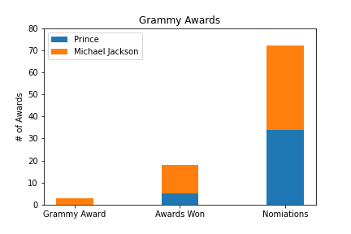

Marks
- Area
Channel
- Shape
- The graphic designner used the shape to show the state, which make the graph more readable. For the viewer the shape convaied the information of the state so that they do not need to print the name on to the map.
- Color Hue
- The use of the color, especially the contratsing red and blue make it easier for the viewer to distinguish between the two party and the inclusion of the strip patteren make the swingging state more obvious to the viewer.
- Length (1D zone)
- The top part uesed the length to show the viewer how the vote comparecen, this is a good way to show that because length is a channel that is well percepted.
Colormap
- Divergent
- The divergent colermap help contrast the two party for the viewer.

Marks
- Points
Channel
- Color
- location
- Target(s

Marks
- Area
Channel
- Color
- Low - Its low ljhba
- Target(s